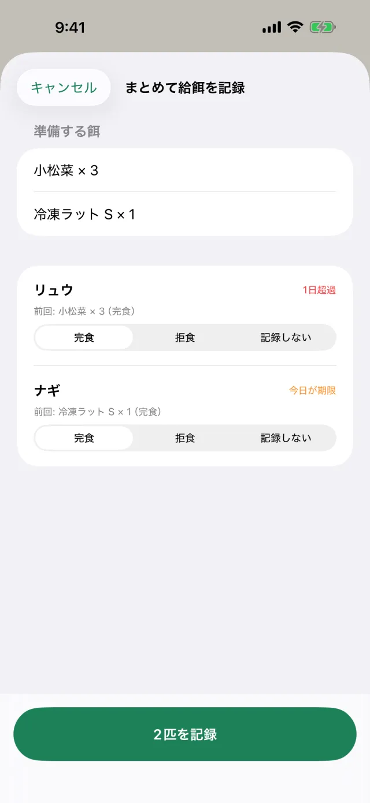
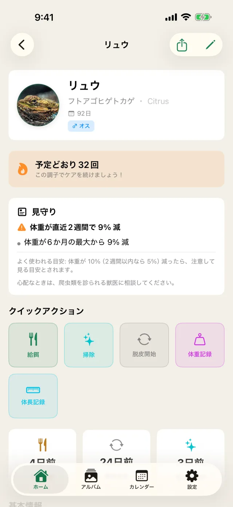
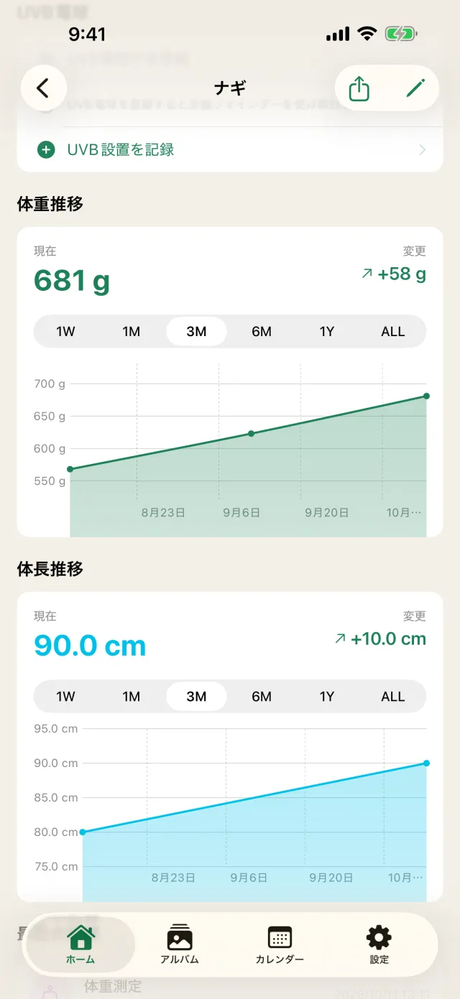
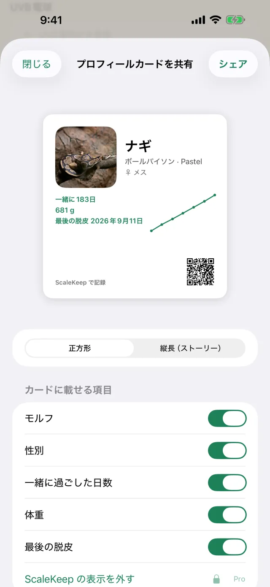
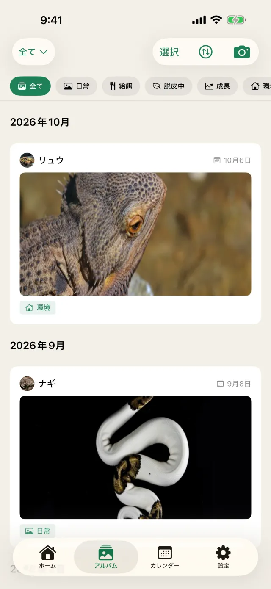

毎日の記録を、短く、続けやすく。
給餌が数日〜2 週間おきの爬虫類に合わせて作っています。

今日の給餌を、まとめて記録
期限が来た個体を、次に給餌する順に並べます。準備する餌の数も合計して出すので、冷凍マウスをいくつ解凍すればよいかがすぐ分かります。
- 個体ごとに「食べた」「拒食」「記録しない」を選んで一度に保存
- 前回の餌と数をそのまま使える

拒食と体重の減少に、早く気づく
拒食の連続、最後に食べてからの日数、体重の減少を記録から計算して表示します。よく使われる目安を越えたら通知でお知らせします。
- 目安はヘビとそれ以外、幼体と成体で分けています
- 診断ではありません。心配なときは爬虫類を診られる獣医にご相談ください

体重と体長を、グラフで見る
記録した体重と体長の推移を、自動でグラフにします。1 週間から全期間まで、期間を切り替えて比べられます。

自慢の子を、カードで共有
写真・種類・モルフ・体重のグラフを 1 枚の画像にまとめます。SNS の投稿用（正方形）とストーリー用（縦長）を選べ、載せる項目も切り替えられます。画像は端末の中で作り、外部へは送りません。

お世話の記録を、ひとつのアプリに
- 脱皮の兆候から完了まで記録
- 掃除と UVB ライトの交換を通知でお知らせ
- 成長の写真をアルバムで振り返り
- 給餌・脱皮・体重をカレンダーで一覧
- ホーム画面のウィジェットで次の給餌日を確認
よく飼われる 7 種をはじめから用意
種ごとの給餌の間隔の目安を使って、次の給餌日を自動で計算します。ほかの種も自由に登録できます。
記録は、あなたのもの
アカウント登録なし
インストールしてすぐに使えます。メールアドレスもパスワードも要りません。
iCloud で同期
自分の iCloud を通じて、iPhone と iPad の間で記録がそろいます。設定でオフにもできます。
CSV で書き出し
記録をいつでも CSV で書き出せます。獣医への相談や、表計算での管理にも。
記録を外へ送らない
個体の名前・写真・記録した数値を、開発元のサーバーへ送ることはありません。
料金
主な機能は無料で使えます。
無料
¥0
- 3 匹まで登録
- 給餌・脱皮・体重・掃除・UVB の記録と通知
- 通知からの記録、まとめて記録
- 見守り（拒食と体重の減少）
- iCloud の同期、CSV の書き出し
- 広告が表示されます
Pro
¥500 / 月
- 登録できる個体の数が無制限
- 広告なし
- プロフィールカードからアプリ名と QR を外せる
年額 ¥4,000（対象の方は 7 日間の無料トライアルあり）、買い切り ¥8,000 も選べます。月額と年額は自動更新のサブスクリプションです。
よくある質問
Pro を解約したら、記録は消えますか？
消えません。無料に戻っても、登録済みの個体と記録はそのまま見られます。4 匹目以降を新しく登録するときに Pro が必要になります。
機種変更しても記録を引き継げますか？
iCloud の同期がオンなら、同じ Apple ID でサインインした新しい端末に記録が届きます。CSV で書き出しておくこともできます。
見守りは病気を判定しますか？
いいえ。記録から、よく使われる目安を越えたかを知らせるだけで、診断ではありません。心配なときは爬虫類を診られる獣医にご相談ください。
Android 版はありますか？
今は iPhone と iPad だけです（iOS 17 以降）。
爬虫類ショップ・ブリーダーの方へ
動物取扱業の書類を、日々の記録から作る「業務プラン」を準備中です
帳簿・定期報告の下書き・販売時の説明書・点検台帳を、ScaleKeep の記録から作れるようにします。
今日の給餌から、記録をはじめよう。
無料で 3 匹まで登録できます。